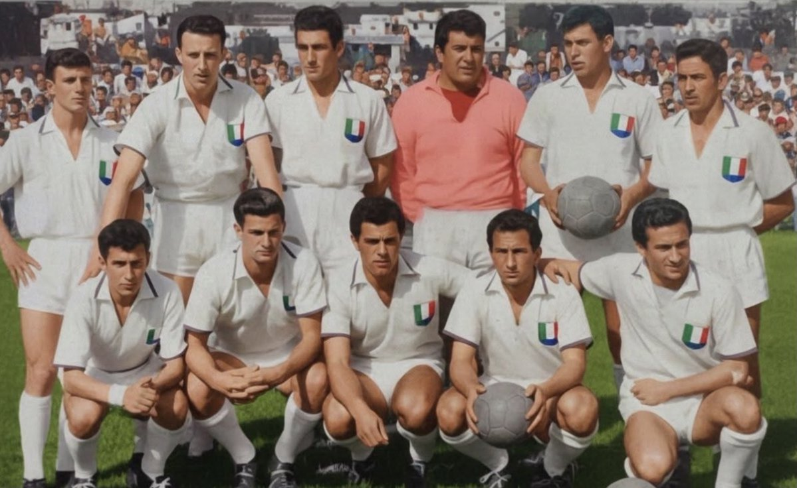
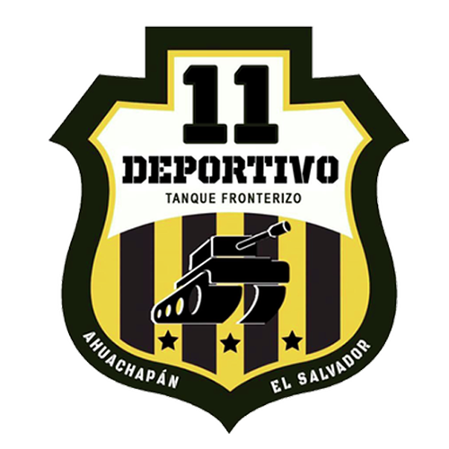

Plantilla fundacional - Estadio Fernando Londoño y Londoño.
Clubes Predecesores

Once Deportivo Deportes Caldas
Deportes Caldas
Ficha Institucional
Fusión:
Once Dep. + Dep. Caldas
Primer D.T:
Alfredo Cuezzo (Arg)
Sede inicial:
Edificio Seguros Bolívar
Personería:
Enero 15 de 1961
Unificación Estratégica
La creación del Once Caldas fue una respuesta técnica a la crisis estructural que enfrentaba el fútbol en Manizales. La desaparición del Once Deportivo y el Deportes Caldas dio paso a una entidad unificada capaz de competir al más alto level profesional.
1947
Once Deportivo inicia su trayectoria en el FPC.
1950
Deportes Caldas logra su primera estrella profesional.
1961
Fusión definitiva y registro oficial ante Dimayor.
El color blanco fue elegido como símbolo de paz y unidad entre las dos hinchadas locales, dando origen al apodo 'El Blanco Blanco de Manizales', referente de gloria continental.